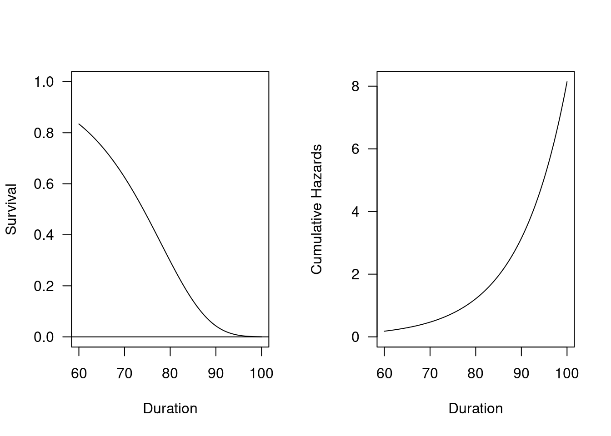

Chapter 4 Survival Analyses: Part 2
In this section, we will cover 1) survival data structure (i.e., counting process) and 2) modeling survival data.
4.1 Set packages and library
library(eha)
library(survival)
#install.packages("ggfortify")
library(ggfortify)
library(ggplot2)
library(tidyverse)
library(data.table)
#install.packages("flextable")
library(flextable)
library(knitr)4.2 Counting process
4.2.1 Example
“The oldmort dataset in eha package contains life histories of people followed from their 60th birthday to their 100th, or until death, born between June 28, 1765 and December 31, 1820 in Skellefteå. The variable enter is age at start of the given interval, exit contains the age at the end of the interval. We need to calculate follow-up time since age 60 - 60 is subtracted from enter and exit. The variable event is an indicator of death at the duration given by exit.” https://www.rdocumentation.org/packages/eha/versions/2.8.5/topics/oldmort [Göran Broström, http://ehar.se/r/ehar2/parametric.html]
Here are the summary of the oldmort dataset.
library(eha)
oldmort01 <- oldmort
summary(oldmort01) # descriptive statistics## id enter exit event
## Min. :765000603 Min. :60.00 Min. : 60.00 Mode :logical
## 1st Qu.:797001170 1st Qu.:60.00 1st Qu.: 63.88 FALSE:4524
## Median :804001545 Median :60.07 Median : 68.51 TRUE :1971
## Mean :803652514 Mean :64.07 Mean : 69.89
## 3rd Qu.:812001564 3rd Qu.:66.88 3rd Qu.: 74.73
## Max. :826002672 Max. :94.51 Max. :100.00
##
## birthdate m.id f.id sex
## Min. :1765 Min. : 6039 Min. : 2458 male :2884
## 1st Qu.:1797 1st Qu.:766000610 1st Qu.:763000610 female:3611
## Median :1805 Median :775000742 Median :772000649
## Mean :1804 Mean :771271398 Mean :762726961
## 3rd Qu.:1812 3rd Qu.:783000743 3rd Qu.:780001077
## Max. :1820 Max. :802000669 Max. :797001468
## NA's :3155 NA's :3310
## civ ses.50 birthplace imr.birth region
## unmarried: 557 middle : 233 parish:3598 Min. : 4.348 town : 657
## married :3638 unknown:2565 region:1503 1st Qu.:12.709 industry:2214
## widow :2300 upper : 55 remote:1394 Median :14.234 rural :3624
## farmer :1562 Mean :15.209
## lower :2080 3rd Qu.:17.718
## Max. :31.967
## str(oldmort01) # structure## 'data.frame': 6495 obs. of 13 variables:
## $ id : int 765000603 765000669 768000648 770000562 770000707 771000617 771000619 771000638 771000670 772000622 ...
## $ enter : num 94.5 94.3 91.1 89 90 ...
## $ exit : num 95.8 95.8 91.9 89.6 90.2 ...
## $ event : logi TRUE TRUE TRUE TRUE TRUE TRUE ...
## $ birthdate : num 1765 1766 1769 1771 1770 ...
## $ m.id : int NA NA NA NA NA NA NA NA NA NA ...
## $ f.id : int NA NA NA NA NA NA NA NA NA NA ...
## $ sex : Factor w/ 2 levels "male","female": 2 2 2 2 2 2 1 2 2 2 ...
## $ civ : Factor w/ 3 levels "unmarried","married",..: 3 1 3 3 3 3 3 3 3 3 ...
## $ ses.50 : Factor w/ 5 levels "middle","unknown",..: 2 2 2 2 1 2 5 2 2 2 ...
## $ birthplace: Factor w/ 3 levels "parish","region",..: 3 1 1 1 2 1 2 1 1 1 ...
## $ imr.birth : num 22.2 17.7 12.7 16.9 12 ...
## $ region : Factor w/ 3 levels "town","industry",..: 3 2 3 2 3 3 3 2 3 2 ...head(oldmort01) # preview## id enter exit event birthdate m.id f.id sex civ ses.50
## 1 765000603 94.510 95.813 TRUE 1765.490 NA NA female widow unknown
## 2 765000669 94.266 95.756 TRUE 1765.734 NA NA female unmarried unknown
## 3 768000648 91.093 91.947 TRUE 1768.907 NA NA female widow unknown
## 4 770000562 89.009 89.593 TRUE 1770.991 NA NA female widow unknown
## 5 770000707 89.998 90.211 TRUE 1770.002 NA NA female widow middle
## 6 771000617 88.429 89.762 TRUE 1771.571 NA NA female widow unknown
## birthplace imr.birth region
## 1 remote 22.20000 rural
## 2 parish 17.71845 industry
## 3 parish 12.70903 rural
## 4 parish 16.90544 industry
## 5 region 11.97183 rural
## 6 parish 13.08594 ruralTo check how this dataset is constructed, we will need to identify any duplicated id.
dup01 <- data.frame(table(oldmort01$id))
dup02 <- dup01[order(-dup01$Freq), ]In the following example, please check
- When is a new record for the same id created?
- What are the time-invariant variables?
- What are the time-variant variables?
- What does it mean by “TRUE” or “FALSE” in event?
- How does the time of enter and exit connected with each other? What would happen if there is a gap between two records?
dup03 <- oldmort01[oldmort01$id %in% c("789000771", "796001158"), ]
dup03## id enter exit event birthdate m.id f.id sex civ ses.50
## 536 789000771 70.570 72.059 FALSE 1789.430 NA NA female married unknown
## 537 789000771 72.059 79.391 FALSE 1789.430 NA NA female married unknown
## 538 789000771 79.391 79.947 FALSE 1789.430 NA NA female widow unknown
## 539 789000771 80.010 83.750 FALSE 1789.430 NA NA female widow unknown
## 540 789000771 84.358 87.274 TRUE 1789.430 NA NA female unmarried unknown
## 1472 796001158 63.531 64.020 FALSE 1796.469 NA NA male married farmer
## 1473 796001158 64.020 65.020 FALSE 1796.469 NA NA male widow farmer
## 1474 796001158 65.020 70.019 FALSE 1796.469 NA NA male widow farmer
## 1475 796001158 70.019 80.021 FALSE 1796.469 NA NA male widow farmer
## 1476 796001158 80.021 83.531 FALSE 1796.469 NA NA male widow farmer
## birthplace imr.birth region
## 536 region 19.92337 rural
## 537 region 19.92337 rural
## 538 region 19.92337 rural
## 539 region 19.92337 rural
## 540 region 19.92337 rural
## 1472 parish 19.92337 rural
## 1473 parish 19.92337 rural
## 1474 parish 19.92337 rural
## 1475 parish 19.92337 rural
## 1476 parish 19.92337 rural4.2.2 Practice: AddHealth Public datasets
There are many ways to construct long-form datasets with counting process. The following procedure is just one way to achieve the goal.
Here are a couple of things to construct a long-form dataset with counting process.
- In practice, measuring outcomes, exposures, confounders, and other variables involves a separate procedure for each one of variables. I personally prefer to divide each measurement as time-variant and time-invariant datasets, respectively.
- Two variables should be ALWAYS included in every single dataset you are working on - AID and wave (or any other Time variable).
- Datasets with time-invariant variables can be merged by AID, while those with time-variant variables need to be merged by AID and wave.
- Time-varying variables will be assigned a single variable name. Let’s say we are to use self-rated health with a variable name of SRH for five waves. The dataset should contain AID, wave, and SRH. The SRH in each wave should be assigned the same name, SRH, and the wave information will be on wave. This way, you can simply “stack up” all 5-wave data to construct the long-form datasets.
First, each rda dataset will be loaded and then saved as WAVE0X. After assigning a wave variable for each of them, we will keep the WAVE0X dataset and WX datasets only.
#1st wave
load("~/pCloudDrive/Datasets/AddHealthPublic/ICPSR_21600/DS0001/21600-0001-Data.rda")
wave01 <- da21600.0001
wave01$wave <- 1
rm(da21600.0001)
w1 = subset(wave01, select = c(AID, wave))
#2nd wave
load("~/pCloudDrive/Datasets/AddHealthPublic/ICPSR_21600/DS0005/21600-0005-Data.rda")
wave02 <- da21600.0005
wave02$wave <- 2
rm(da21600.0005)
w2 = subset(wave02, select = c(AID, wave))
#3rd wave
load("~/pCloudDrive/Datasets/AddHealthPublic/ICPSR_21600/DS0008/21600-0008-Data.rda")
wave03 <- da21600.0008
wave03$wave <- 3
rm(da21600.0008)
w3 = subset(wave03, select = c(AID, wave))
#4th wave
load("~/pCloudDrive/Datasets/AddHealthPublic/ICPSR_21600/DS0022/21600-0022-Data.rda")
wave04 <- da21600.0022
wave04$wave <- 4
rm(da21600.0022)
w4 = subset(wave04, select = c(AID, wave))
# 5th wave
load("~/pCloudDrive/Datasets/AddHealthPublic/ICPSR_21600/DS0032/21600-0032-Data.rda")
wave05 <- da21600.0032
wave05$wave <- 5
rm(da21600.0032)
w5 = subset(wave05, select = c(AID, wave))The complete list of respondents can be obtained by aggregating all WX datasets and then getting the unique AID.
- The numbers of cases for both occasions are the same. It looks like the first wave contains all respondents - no additional respondents were added.
- To check this observation, we will see both AID from the first wave and All matched.
- Because the n didn’t change, we confirmed that WAVE01 contains all respondents of the study.
AH01 <- unique(subset(rbind(w1, w2, w3, w4, w5), select = c(AID)))
test01 <- cbind(wave01, AH01, by="AID")4.2.2.1 Generate a complete framework with AID and wave (Optional)
I personally prefer working with a “complete framework” containing all AID and wave.
lf01 <- rbind(w1, w2, w3, w4, w5)
lf <- lf01[order(lf01$AID, lf01$wave), ]Here is the merged (“stacked”) dataset.
head(lf01)## AID wave
## 1 57100270 1
## 2 57101310 1
## 3 57103171 1
## 4 57103869 1
## 5 57104553 1
## 6 57104649 1Sorting by AID and wave, we can easily identify the data structure by AID and wave. This lf dataset is what I call a “framework” of this data source, which is the one that will be used whenever combining or merging datasets.
head(lf)## AID wave
## 1 57100270 1
## 11339 57100270 3
## 2 57101310 1
## 6505 57101310 2
## 11340 57101310 3
## 16221 57101310 4Keep the number of cases (n = 25530) for your record. This number should be the number you expect whenever you merge or stack datasets.
count(lf)## n
## 1 255304.2.2.2 Time-variant variables from each wave
In this practice, we will select and rename self-rated health (for all 5-wave) and appetite (only for \(1^{st}\) and \(2^{nd}\) waves) measures.
srh1 <- wave01 %>%
dplyr::select(AID,
wave,
"a_srh" = H1GH1,
"a_poorappetite" = H1FS2)
srh2 <- wave02 %>%
dplyr::select(AID,
wave,
"a_srh" = H2GH1,
"a_poorappetite" = H2GH22)
srh3 <- wave03 %>%
dplyr::select(AID,
wave,
"a_srh" = H3GH1)
srh4 <- wave04 %>%
dplyr::select(AID,
wave,
"a_srh" = H4GH1)
srh5 <- wave05 %>%
dplyr::select(AID,
wave,
"a_srh" = H5ID1)Please note that how to name the “temporary” datasets. I found that using the combination of ‘variable name + wave’ minimizes any confusions later.
The ‘rbind’ function requires all datasets have a same numbers of columns. ‘setDT’ and ‘fill=TRUE’ are the functions from a ‘data.table’ package that override this requirement.
Now, we have created a long-form dataset (i.e., srh_TV) from five sets of cross-sectional datasets.
srh_TV01 <- rbind(setDT(srh1), setDT(srh2), setDT(srh3), setDT(srh4), setDT(srh5), fill=TRUE)
srh_TV <- srh_TV01[order(srh_TV01$AID, srh_TV01$wave), ]
# 6504, 4834, 4882, 5114, 4196, 25530head(srh_TV)## AID wave a_srh a_poorappetite
## 1: 57100270 1 (3) (3) Good (0) (0) Never/rarely
## 2: 57100270 3 (1) (1) Excellent <NA>
## 3: 57101310 1 (4) (4) Fair (1) (1) Sometimes
## 4: 57101310 2 (4) (4) Fair (4) (4) Every day
## 5: 57101310 3 (2) (2) Very good <NA>
## 6: 57101310 4 (3) (3) Good <NA>4.2.2.3 Time-invariant
By definition, when a variable is time-invariant, only one measure from any variable should be applied to all other waves. In this example, we select sex from the first wave (because of completeness), which will be applied to the whole long-form dataset.
demo_TI <- wave01 %>%
select(AID,
"a_sex" = BIO_SEX)4.2.2.4 Merging datasets
Once you have selected, created, and modified all required variables by waves, stacking all waves datasets will generate a long-form dataset per wave-person as long as you have keep AID and wave variables for all datasets.
In this example, we’ve created three datasets - lf (a framework), demo_TI (time-invariant), and srh_TV (time-variant).
- Framework + time-invariant (i.e., lf (a framework) and demo_TI (time-invariant))
Final01 <- merge(lf, demo_TI, by = c("AID"))
head(Final01)## AID wave a_sex
## 1 57100270 1 (2) (2) Female
## 2 57100270 3 (2) (2) Female
## 3 57101310 1 (2) (2) Female
## 4 57101310 2 (2) (2) Female
## 5 57101310 3 (2) (2) Female
## 6 57101310 4 (2) (2) Female- Framework + time-invariant + time-variant (i.e., Final01 + srh_TV (time-variant))
Final02 <- merge(Final01, srh_TV, by = c("AID", "wave"))
head(Final02)## AID wave a_sex a_srh a_poorappetite
## 1 57100270 1 (2) (2) Female (3) (3) Good (0) (0) Never/rarely
## 2 57100270 3 (2) (2) Female (1) (1) Excellent <NA>
## 3 57101310 1 (2) (2) Female (4) (4) Fair (1) (1) Sometimes
## 4 57101310 2 (2) (2) Female (4) (4) Fair (4) (4) Every day
## 5 57101310 3 (2) (2) Female (2) (2) Very good <NA>
## 6 57101310 4 (2) (2) Female (3) (3) Good <NA>4.2.2.5 Define event, enter, and exit
The event can be defined as your outcomes. Depending on the nature of outcomes, it could be a multiple or repetitive events, requiring more complex survival modeling with more assumptions.
- Using lag/lead(wave)
Final03 <- Final02 %>%
group_by(AID) %>%
dplyr::mutate(
enter = lag(wave),
exit = wave
) %>%
ungroup()
Final03$enter[Final03$wave == 1 & is.na(Final03$enter)] <- 0Because we used wave as an example, it may look more complicated than necessary - for example, we may simply use enter = exit - 1. However, this lag/lead function is required when working with the actual date which interval is not always equal to 1.
4.3 Non-, sem-, and parametric survival regression models
4.3.1 Nonparametric models
Let’s fit Kaplan-Meier (KM) and Nelson-Aalen (NA) estimators using the oldmort01 dataset from the eha package.
- Kaplan-Meier (KM) survival estimator
## KM
bysex_KM <- survfit(Surv(enter, exit, event) ~ sex,
data=oldmort01,
conf.type="log-log")
## Tables
bysex_KM## Call: survfit(formula = Surv(enter, exit, event) ~ sex, data = oldmort01,
## conf.type = "log-log")
##
## records n events median 0.95LCL 0.95UCL
## sex=male 2884 1390 854 75.1 74.3 75.6
## sex=female 3611 1833 1117 76.7 76.1 77.1##summary(bysex)
summary(bysex_KM, times=c(60, 65, 70, 75, 80, 85, 90, 95, 100, 105, 110)) # add time points## Call: survfit(formula = Surv(enter, exit, event) ~ sex, data = oldmort01,
## conf.type = "log-log")
##
## sex=male
## time n.risk n.event survival std.err lower 95% CI upper 95% CI
## 60 1390 0 1.00000 0.00000 1.000000 1.0000
## 65 1017 183 0.85817 0.00974 0.837865 0.8761
## 70 697 168 0.70232 0.01352 0.674905 0.7279
## 75 428 184 0.50490 0.01576 0.473598 0.5353
## 80 191 171 0.28095 0.01561 0.250745 0.3119
## 85 55 105 0.10892 0.01237 0.086192 0.1346
## 90 12 34 0.03311 0.00841 0.019374 0.0526
## 95 1 8 0.00392 0.00381 0.000404 0.0197
##
## sex=female
## time n.risk n.event survival std.err lower 95% CI upper 95% CI
## 60 1833 0 1.0000 0.00000 1.000000 1.00000
## 65 1416 166 0.9022 0.00723 0.886989 0.91541
## 70 1034 205 0.7610 0.01094 0.738691 0.78161
## 75 669 238 0.5736 0.01343 0.546771 0.59938
## 80 318 236 0.3477 0.01415 0.320058 0.37547
## 85 115 167 0.1527 0.01192 0.130179 0.17687
## 90 27 80 0.0380 0.00705 0.025840 0.05359
## 95 5 21 0.0075 0.00333 0.002894 0.01662
## 100 1 4 0.0015 0.00150 0.000153 0.00812- Nelson-Aalen (NA) estimator
## NA
bysex_NA <- survfit(Surv(enter, exit, event) ~ sex,
data=oldmort01,
conf.type="log-log",
type="fh") # an option for NA estimator
## Tables
bysex_NA## Call: survfit(formula = Surv(enter, exit, event) ~ sex, data = oldmort01,
## conf.type = "log-log", type = "fh")
##
## records n events median 0.95LCL 0.95UCL
## sex=male 2884 1390 854 75.1 74.3 75.6
## sex=female 3611 1833 1117 76.7 76.1 77.1##summary(bysex)
summary(bysex_NA, times=c(60, 65, 70, 75, 80, 85, 90, 95, 100, 105, 110)) # add time points## Call: survfit(formula = Surv(enter, exit, event) ~ sex, data = oldmort01,
## conf.type = "log-log", type = "fh")
##
## sex=male
## time n.risk n.event survival std.err lower 95% CI upper 95% CI
## 60 1390 0 1.00000 0.00000 1.00000 1.0000
## 65 1017 183 0.85822 0.00974 0.83793 0.8762
## 70 697 168 0.70245 0.01352 0.67504 0.7280
## 75 428 184 0.50514 0.01575 0.47385 0.5356
## 80 191 171 0.28138 0.01561 0.25118 0.3123
## 85 55 105 0.10962 0.01239 0.08685 0.1353
## 90 12 34 0.03418 0.00849 0.02024 0.0538
## 95 1 8 0.00583 0.00449 0.00101 0.0216
##
## sex=female
## time n.risk n.event survival std.err lower 95% CI upper 95% CI
## 60 1833 0 1.00000 0.00000 1.000000 1.00000
## 65 1416 166 0.90220 0.00723 0.887022 0.91543
## 70 1034 205 0.76103 0.01094 0.738776 0.78169
## 75 669 238 0.57371 0.01342 0.546935 0.59953
## 80 318 236 0.34799 0.01415 0.320348 0.37575
## 85 115 167 0.15315 0.01193 0.130627 0.17734
## 90 27 80 0.03863 0.00710 0.026391 0.05434
## 95 5 21 0.00824 0.00347 0.003349 0.01759
## 100 1 4 0.00228 0.00183 0.000381 0.00911- Overall survival and hazard curves for the population
## Plots
par(mfrow = c(1, 2))# Two panels, "one row, two columns".
with(oldmort01, plot(Surv(enter, exit, event), fun = "cumhaz",
main = "Cumulativa hazards function",
xlab = "Duration"))
with(oldmort01, plot(Surv(enter, exit, event),
main = "Survival function",
xlab = "Duration"))- Comparison between Male and Female
# Plots
par(mfrow = c(1, 2))# Two panels, "one row, two columns".
plot(bysex_KM,
ylab = "Survival probability",
xlab = "Time",
mark.time = T,
main="Kaplan-Meier survival curve")
legend("topleft", c("Male","Female"),
lty=c("solid","dashed"),
col=c("black","red"))
#abline(h = 0.5, col = "sienna", lty = 3)
plot(bysex_NA,
ylab = "Cumulative hazard",
xlab = "Time",
mark.time = T,
fun="cumhaz",
main="Nelson-Aalen cumulative hazard curve")
legend("topleft", c("Male","Female"),
lty=c("solid","dashed"),
col=c("black","red"))
#abline(h = 0.5, col = "sienna", lty = 3)- For a better plot for comparisons
library(ggfortify)
library(ggplot2)
autoplot(bysex_KM,
ylab = "Survival probabilities",
xlab = "Survival time",
#mark.time = T,
main="Kaplan-Meier survival curve estimate with 95% CIs"
)4.3.2 Semi-parametric models: Cox Regression
oldmort_cox <- coxreg(Surv(enter, exit, event) ~ sex + region + imr.birth,
data = oldmort01)
print(summary(oldmort_cox), digits = 4)## Covariate Mean Coef Rel.Risk S.E. LR p
## sex 0.0001
## male 0.406 0 1 (reference)
## female 0.594 -0.185 0.831 0.046
## region 0.0013
## town 0.111 0 1 (reference)
## industry 0.326 0.225 1.252 0.087
## rural 0.563 0.069 1.071 0.087
## imr.birth 15.162 0.005 1.005 0.007 0.5009
##
## Events 1971
## Total time at risk 37824
## Max. log. likelihood -13563
## LR test statistic 31.41
## Degrees of freedom 4
## Overall p-value 2.52611e-06# Plots
par(mfrow = c(1, 2), las = 1)
plot(oldmort_cox,
fn = "sur", main = "",
#xlab="Duration (year)",
ylab="Survival",
#xlim=c(0, 1)
#ylim=c(ymin, ymax)
)
plot(oldmort_cox,
fn = "cum", main = "",
#xlab="Duration (year)",
ylab="Hazard",
#xlim=c(0, 1)
#ylim=c(ymin, ymax)
)
4.3.3 Parametric models
Let’s think some some feasible models addressing how the survival varies by sex, region, and infant mortality of the cohort, using oldmort01 dataset.
Here are some possible models depending on the outcome: - Linear or Poisson regression on the ‘survival time’, which can be defined as the time of death (i.e., ‘exit’). We may need to subset only those who died, potentially resulting in considerable loss of data. - Logistic regression for the event, death. How would you incorporate “survival time” in this model?
4.3.3.1 GLM: Logistic regression
To fit logistic regression, ‘death’ variable was created.
oldmort01$death <- ifelse(oldmort01$event == "TRUE", 1, 0)Logistic model was fitted as below.
oldmort_log <- glm(death ~ sex + region + imr.birth,
data=oldmort01,
family = binomial(link = "logit"))
summary(oldmort_log)##
## Call:
## glm(formula = death ~ sex + region + imr.birth, family = binomial(link = "logit"),
## data = oldmort01)
##
## Deviance Residuals:
## Min 1Q Median 3Q Max
## -0.9467 -0.8371 -0.8105 1.4506 1.6661
##
## Coefficients:
## Estimate Std. Error z value Pr(>|z|)
## (Intercept) -1.003482 0.166455 -6.029 1.65e-09 ***
## sexfemale 0.073055 0.054619 1.338 0.181050
## regionindustry 0.378124 0.100516 3.762 0.000169 ***
## regionrural 0.111579 0.099098 1.126 0.260188
## imr.birth -0.004146 0.007756 -0.534 0.593010
## ---
## Signif. codes: 0 '***' 0.001 '**' 0.01 '*' 0.05 '.' 0.1 ' ' 1
##
## (Dispersion parameter for binomial family taken to be 1)
##
## Null deviance: 7972.9 on 6494 degrees of freedom
## Residual deviance: 7944.9 on 6490 degrees of freedom
## AIC: 7954.9
##
## Number of Fisher Scoring iterations: 4To ease interpretation, we exponentiate coefficients (and CIs).
exp(coef(oldmort_log))## (Intercept) sexfemale regionindustry regionrural imr.birth
## 0.3666006 1.0757895 1.4595443 1.1180423 0.99586314.3.3.2 GLM: Linear regression
4.3.3.2.1 Model specification
\[ Y_{Time\;to\; death} = b_0 + b_1\times D_f + b_2 \times D_{ind} + b_3 \times D_{rural} + b_4 \times X_{IMR} + \epsilon_i, \;\; \epsilon \sim N(0, 1)\] ##### Estimation
To fit linear model, we need to subset data for the death and use ‘exit’ as an outcome.
oldmort02 <- oldmort01[oldmort01$death == 1,]oldmort_lm <- glm(exit ~ sex + region + imr.birth,
data=oldmort02,
family = "gaussian")
summary(oldmort_lm)##
## Call:
## glm(formula = exit ~ sex + region + imr.birth, family = "gaussian",
## data = oldmort02)
##
## Deviance Residuals:
## Min 1Q Median 3Q Max
## -14.6605 -6.3367 -0.1812 5.4018 25.3607
##
## Coefficients:
## Estimate Std. Error t value Pr(>|t|)
## (Intercept) 71.99777 1.12285 64.120 < 2e-16 ***
## sexfemale 1.90403 0.35249 5.402 7.4e-08 ***
## regionindustry 2.07598 0.66429 3.125 0.00180 **
## regionrural 1.80560 0.66531 2.714 0.00671 **
## imr.birth -0.09621 0.05156 -1.866 0.06219 .
## ---
## Signif. codes: 0 '***' 0.001 '**' 0.01 '*' 0.05 '.' 0.1 ' ' 1
##
## (Dispersion parameter for gaussian family taken to be 60.06622)
##
## Null deviance: 120769 on 1970 degrees of freedom
## Residual deviance: 118090 on 1966 degrees of freedom
## AIC: 13673
##
## Number of Fisher Scoring iterations: 2b_lm = coef(oldmort_lm)
knitr::kable(b_lm)| x | |
|---|---|
| (Intercept) | 71.9977676 |
| sexfemale | 1.9040306 |
| regionindustry | 2.0759823 |
| regionrural | 1.8056008 |
| imr.birth | -0.0962143 |
Thus, our estimated model is
Time to death (\(t\)) = (71.9977676) + (1.9040306)\(\times\)sex_female + (2.0759823)\(\times\)region_industry + (1.8056008)\(\times\)region_rural + (-0.0962143)\(\times\)IMR
4.3.3.2.2 Interpretations
- What is the metric of \(y\) and \(b_i\), respectively?
- Interpret \(b_0, b_1,\) and \(b_2\), respectively.
- What is the interpretation when 1) \(b_i = 0\), 2) \(b_i < 0\), or 3) \(b_i > 0\)?
- How would you compare the time to death between two groups of people below? Is the effect additive or multiplicative?
- What is the estimated time to death for those who with sex = 0, region = 0, and IMR = 0 vs. those who with sex = 1, region = 0, and IMR = 0?
- What is the estimated time to death for those who with sex = 0, region = 2, and IMR = 90 vs. those who with sex = 1, region = 2, and IMR = 90?
4.3.3.3 Weibull model
# Models
oldmort_wei <- phreg(Surv(enter, exit, event) ~ sex + region + imr.birth,
data = oldmort01,
dist = "weibull")
# Table
#print(summary(parm), digits = 4)
oldmort_wei## Call:
## phreg(formula = Surv(enter, exit, event) ~ sex + region + imr.birth,
## data = oldmort01, dist = "weibull")
##
## Covariate W.mean Coef Exp(Coef) se(Coef) Wald p
## sex
## male 0.406 0 1 (reference)
## female 0.594 -0.185 0.831 0.046 0.000
## region
## town 0.111 0 1 (reference)
## industry 0.326 0.223 1.250 0.087 0.010
## rural 0.563 0.065 1.067 0.087 0.456
## imr.birth 15.162 0.005 1.005 0.007 0.452
##
## log(scale) 4.362 0.019 0.000
## log(shape) 2.083 0.027 0.000
##
## Events 1971
## Total time at risk 37824
## Max. log. likelihood -7281.2
## LR test statistic 31.82
## Degrees of freedom 4
## Overall p-value 2.08157e-06# Plots
par(mfrow = c(1, 2), las = 1)
plot(oldmort_wei,
fn = "sur", main = "",
#xlab="Duration (year)",
ylab="Survival",
#xlim=c(0, 1)
#ylim=c(ymin, ymax)
)
plot(oldmort_wei,
fn = "cum", main = "",
#xlab="Duration (year)",
ylab="hazard",
#xlim=c(0, 1)
#ylim=c(ymin, ymax)
)4.3.3.4 Gompertz model
# Models
oldmort_gomp <- phreg(Surv(enter, exit, event) ~ sex + region + imr.birth,
data = oldmort01,
dist = "gompertz")
# Table
#print(summary(parm), digits = 4)
oldmort_gomp## Call:
## phreg(formula = Surv(enter, exit, event) ~ sex + region + imr.birth,
## data = oldmort01, dist = "gompertz")
##
## Covariate W.mean Coef Exp(Coef) se(Coef) Wald p
## sex
## male 0.406 0 1 (reference)
## female 0.594 -0.188 0.829 0.046 0.000
## region
## town 0.111 0 1 (reference)
## industry 0.326 0.222 1.248 0.087 0.011
## rural 0.563 0.067 1.069 0.087 0.438
## imr.birth 15.162 0.005 1.005 0.007 0.433
##
## log(scale) 2.353 0.030 0.000
## log(shape) -7.410 0.286 0.000
##
## Events 1971
## Total time at risk 37824
## Max. log. likelihood -7280.6
## LR test statistic 31.79
## Degrees of freedom 4
## Overall p-value 2.11245e-06# Plots
par(mfrow = c(1, 2), las = 1)
plot(oldmort_gomp,
fn = "sur", main = "",
#xlab="Duration (year)",
ylab="Survival",
#xlim=c(0, 1)
#ylim=c(ymin, ymax)
)
plot(oldmort_gomp,
fn = "cum", main = "",
#xlab="Duration (year)",
ylab="hazard",
#xlim=c(0, 1)
#ylim=c(ymin, ymax)
) The following figures summarize cumulative hazard curves by different survival models.
The following figures summarize cumulative hazard curves by different survival models.
# Plots
par(mfrow = c(2, 2), las = 1)
with(oldmort01, plot(Surv(enter, exit, event),
fun = "cumhaz",
main = "Kaplan-Meier",
#xlab = "Duration",
ylab = "",
xlim=c(60, 100),
ylim=c(0, 10)))
plot(oldmort_cox,
fn = "cum",
main = "Cox",
#xlab="Duration (year)",
ylab="",
#xlim=c(0, 1)
ylim=c(0, 10)
)
plot(oldmort_wei,
fn = "cum",
main = "Weibull",
#xlab="Duration (year)",
ylab="",
#xlim=c(0, 1)
ylim=c(0, 10)
)
plot(oldmort_gomp,
fn = "cum",
main = "Gompertz",
#xlab="Duration (year)",
ylab="",
#xlim=c(0, 1)
ylim=c(0, 10)
)